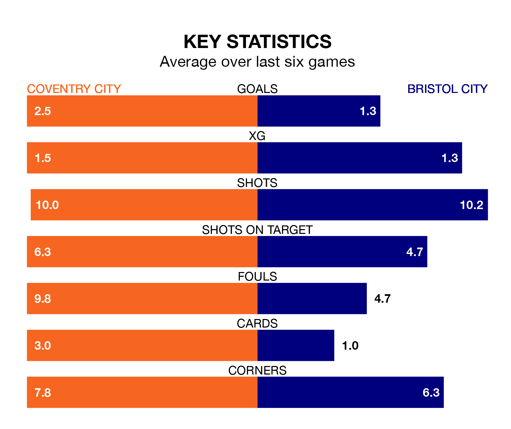

Coventry City are on an excellent run ahead of hosting Bristol City at the Coventry Building Society Arena on Tuesday, with 16 points collected from their last six games.
The Sky Blues have picked up five wins and one draw in their last six EFL Championship games, and face a Robins side whose last six games have brought two wins and two draws.
In the last 10 years, Coventry and Bristol City have played each other on 12 occasions. Coventry won four of them, Bristol City five, and they drew three times.
On average, the Sky Blues scored 1.2 goals and the Robins 1.5 in those matches.
Their last meeting was on October 21, when Bristol City won 1-0 at home.
With 31 goals in 28 games so far this season, Bristol City are scoring at below the league average rate with 1.1 goals per game. But they are conceding fewer than average too, letting in 31 goals at a rate of 1.1 per game.
Coventry, meanwhile, are above average scorers, with 1.5 goals per game, compared to a league average of 1.4. They have conceded 1.1 goals per game.
Coventry City are sixth in the table after 28 games, of which they have won 11 and drawn 10, earning 43 points.
The Robins are seven places behind the Sky Blues in 13th, with 10 wins and seven draws putting them on 37 points.
Coventry's last match was on January 20, a 2-1 win against Sheffield Wednesday, with Ben Sheaf getting the goals for the Sky Blues.
Bristol City drew 1-1 with Watford last time out, also on January 20, with Scott Twine on the scoresheet.
Tuesday's match will be refereed by Leigh Doughty, who has taken charge of five EFL Championship games so far this season, issuing one red card and booking 19 players. He has not awarded any penalties.
He is yet to oversee a match featuring either Coventry or Bristol City this season.
Updated: 09:21 (UTC), 30/01/24